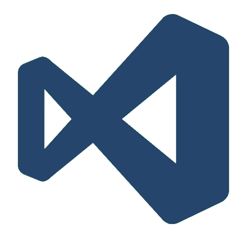
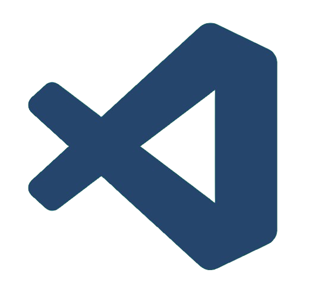
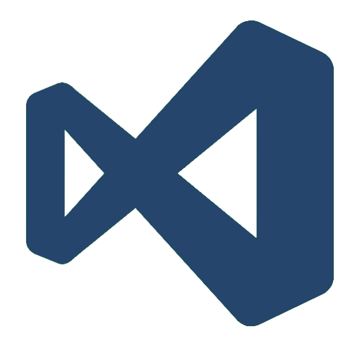
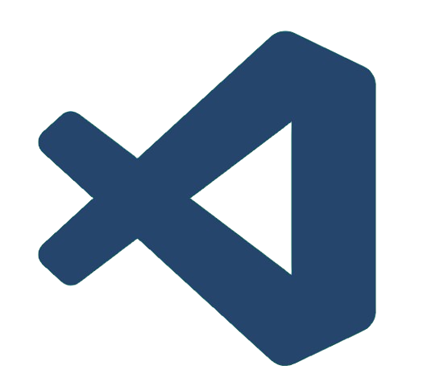

My abilities
and certifications
Programming languages, tools and badges
The first programming language I learned was C++. I started using it in my first year of high school and created my first console apps in my third year. In the fourth year, I used C# to create Windows Forms applications and C for programming processes and threads. I learned Python and JavaScript by taking courses on the HackersGen platform: the former, also useful for cybersecurity challenges, during the school year, and the latter during my internship. Over the years, I have used HTML and CSS to create websites, but I have never paid as much attention to aesthetics and graphics as I did for this personal website.
 



One of the tools I often use at school is Cisco Packet Tracer, which allows me to design and simulate school and company networks. It enables me to manage the cabling and addressing of networks efficiently. During the Olicyber Training Camp, I discovered Wireshark for solving network challenges. It analyzes the network flow and facilitates the manual examination of data packets. Git and GitHub are fundamental tools I use to store my personal projects in the cloud and track changes made to my code. ChatGPT is another very useful resource that I use in various contexts, especially for quick searches and for assistance in resolving programming errors. Finally, for software development, I use Visual Studio for creating Windows Forms apps in C# and Visual Studio Code for working with other programming languages.